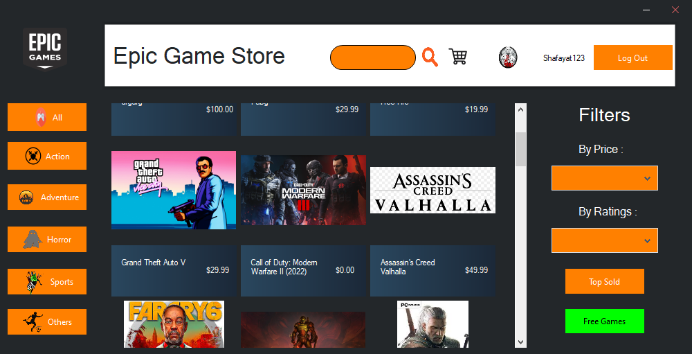
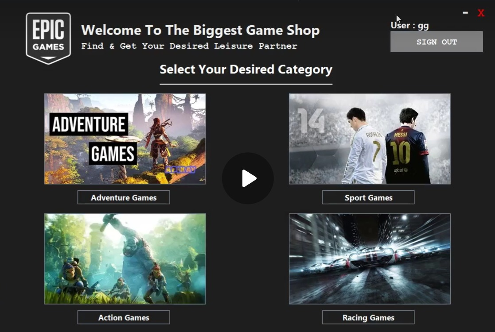

A 2D side-scrolling platformer where a Doraemon-inspired character collects doracakes across five themed levels while avoiding hazards, built with OpenGL primitives as a Computer Graphics course project.

A Windows Forms desktop clone of the Epic Games Store that supports user registration and login, game browsing, a shopping cart, search, and game detail views, with data stored locally in JSON.

A simple Java desktop launcher inspired by the Epic Games Store, built for learning GUI development, user management, and asset handling. Login/registration and a game library are planned.